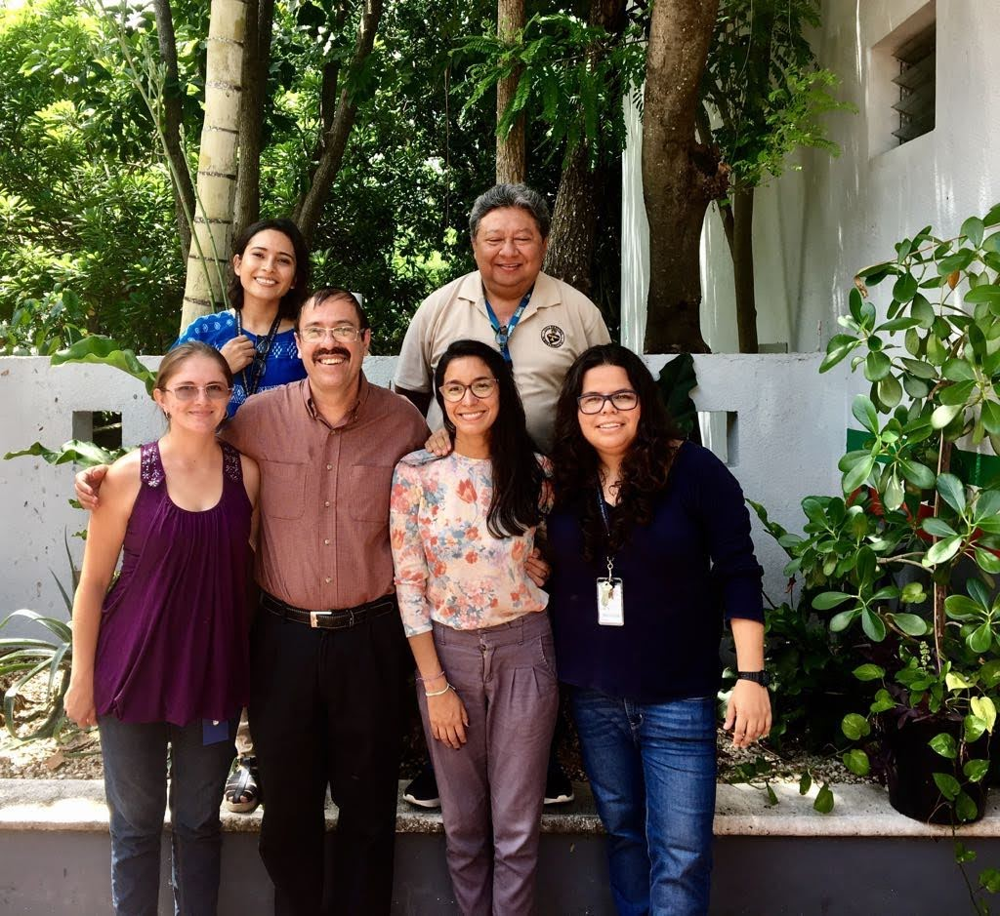
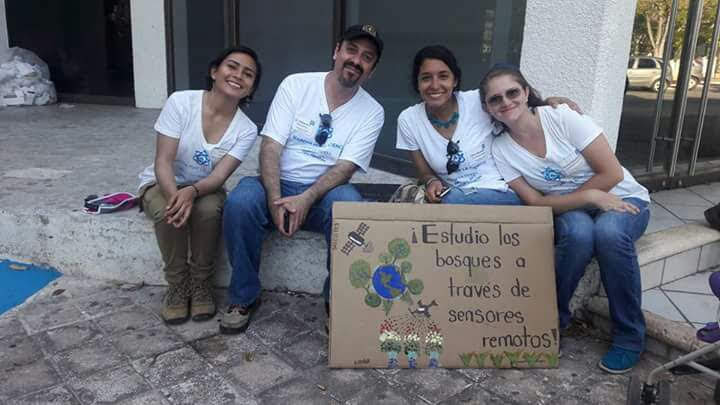
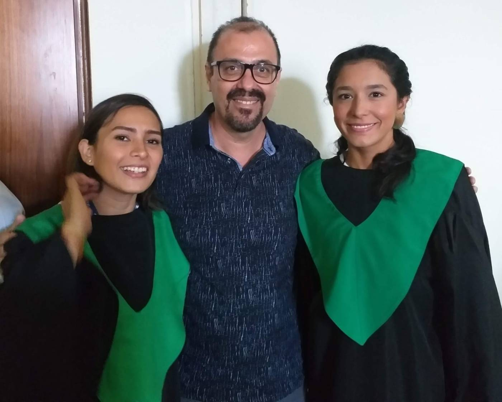

Tesis Concluidas de Doctorado

- Luis Ángel Hernández Martínez. Sesgos de Muestreo en Inventarios Forestales y Modelación de la Biomasa Aérea y Diversidad Florística en ecosistemas de Zonas Áridas. Posgrado en Ciencias Biológicas, CICY. (Fecha de Obtención del grado: Agosto de 2026, Director de tesis).
- Eric Antonio Gamboa Blanco. Evaluación la relación biodiversidad-biomasa aérea en bosques tropicales secos de la península de Yucatán, México. Posgrado en Ciencias Biológicas, CICY. (Fecha de Obtención del grado: julio de 2024, Director de tesis).
- Gabriela Reyes Palomeque. Estructura de paisaje, edad del boque y su relación con la biomasa aérea y la riqueza de especies a diderentes escalas espaciales en bosques tropicales secos. Posgrado en Ciencias Biológicas, CICY. (Fecha de titulación: Enero de 2023, Director de tesis).
- Gerardo Alfonso Carrillo Niquete. Los servicios ambientales del arbolado urbano de Mérida y las posibles consecuencias de la urbanización acelerada. Posgrado en Ciencias Biológicas, CICY. (Fecha de titulacion: septiembre de 2022, Co-director de tesis).
- Stephanie Patricia George Chacón. Mapeo de la edad y la biomasa aérea de los bosques tropicales secos de la Peninsula de Yucatán. Posgrado en Ciencias Biológicas, CICY. (Fecha de Titulación: Marzo de 2022, Director de tesis).
- Astrid Helena Huechacona Ruíz. Caracterización y modelización de los patrones fenológicos de la vegetación de diferentes edades de sucession en bosques tropicales decos de yucata. Posgrado en Ciencias Y Biotecnología de Plantas, CICY. (Fecha de ingreso: julio de 2021, Co-director de tesis).
- López Martínez Jorge Omar. Mecanismos que afectan la diversidad beta de especies leñosas en un bosque tropical seco. Posgrado en Ciencias Y Biotecnología de Plantas, CICY. (Fecha de Obtención del grado: Febrero de 2013, Director de tesis).
- Tetetla Rangel Erika. Diversidad vegetal de especies raras y su relación con la estructura del paisaje a múltiples escalas espaciales en las selvas de la peninsula de Yucatán. Posgrado en Ciencias Y Biotecnología de Plantas, CICY. (Fecha de Obtención del grado: Octubre de 2012, Director de tesis).
Tesis Concluidas de Maestría


- Karina Elizabeth González Muñoz. Cuantificación y mapeo de la biomasa aérea y del carbono removido en Mérida y su zona conurbada. Posgrado en Ciencias Biológicas, CICY. (Fecha de titulacion: Junio de 2025, Director de tesis).
- Juan Andres Mauricio. Estimación del incremento de la biomasa aérea en bosques tropicales secos usando datos de campo y datos LiDAR aéreo y terrestre. CICY. (Fecha de titulación: Octubre de 2023, Director de tesis).
- Carla Ocaño Silveira. Estimación de la biomasa aérea y la riqueza de especies en bosques nativos del nordeste de Uruguay”. Posgrado en Ciencias Biológicas, CICY. (Fecha de titulación: Enero de 2023, Director de tesis).
- Víctor Alexis Peña Lara. Modelación de rasgos funcionales y de la riqueza de funcional en bosques tropicales secos usando percepción remota y datos de campo. Posgrado en Ciencias Biológicas, CICY. (Fecha de titulación: Octubre de 2021, Director de tesis).
- María Aurora Tepale Gómez. Evaluación de dos especies leñosas de la Península de Yucatán como posibles Cultivos Dendroenergéticos. Posgrado en Energia Renovable, CICY, (Fecha de Obtención del grado: Junio 2020, Co-director de tesis).
- Marypaz Ramírez Medina. Estimación de la biomasa aérea y de la intercepción del agua de lluvia en bosques tropicales urbanos, mediante imágenes de muy alta resolución espacial. Posgrado en Ciencias Biológicas, CICY. (Fecha de titulación: Febrero de 2020, Director de tesis).
- Dinosca Dulmary Rondón Rivera. Efectos de la resolución espacial en las estimaciones de biomasa aérea y riqueza de especies, en un bosque seco, Península de Yucatán-México. Posgrado en Ciencias Biológicas, CICY. (Fecha de Obtención del grado: Mayo de 2018, Director de tesis).
- Gabriela Reyes Palomeque. Estimación de la biomasa epígea en bosques secos de la península de Yucatán, combinando datos LiDAR e imágenes multi-espectrales de muy alta resolución. Posgrado en Ciencias Biológicas, CICY. (Fecha de Obtención del grado: Abril de 2018, Director de tesis).
- Ana Cristina Nafarrate Hecht. Estimación directa e indirecta del índice de área folicar (IAF) y su modelación con LiDAR en un bosque tropical seco de Yucatán. Posgrado en Ciencias Biológicas, CICY. (Fecha de Obtención del grado: Junio de 2017, Co-director de tesis).
- Stephanie Patricia George Chacón. Modelización de la diversidad de especies de plantas leñosas en bosques tropicales secos mediante imágenes de alta resolución y datos LiDAR. Posgrado en Ciencias Biológicas, CICY. (Fecha de Obtención del grado: Mayo de 2017, Director de tesis).
- Emmanuel Alfredo Miranda Plaza. Comparación de la estructura y composición de la vegetación en dos paisajes con bosques tropicales seco de la península de Yucatán. Posgrado en Ciencias Biológicas, CICY. (Fecha de Obtención del grado: Abril de 2014, Director de tesis).
- Oscar Yam Uicab. Estimación de la distribución espacial del carbono y la biomasa vegetal area en un paisaje de selva mediana del sur de Yucatán. Posgrado en Ciencias Biológicas, CICY. (Fecha de Obtención del grado: Febrero de 2012, Co-director de tesis).
- Santamaria Rivero Waldemar. Efectos de la estructura del paisaje sobre la riqueza y abundancia de diferentes gremios de alimentación de aves el sur de Yucatán. Posgrado en Ciencias Biológicas, CICY. (Fecha de Obtención del grado: Noviembre de 2011, Co-director de tesis).
- Hernández Juárez Rodrigo. Planeación del uso del suelo en el bosque tropical seco del suroeste de Yucatán. Posgrado en Ciencias Biológicas, CICY. (Fecha de Obtención del grado: Julio de 2011, Co-director de tesis).
Tesis Concluidas de Licenciatura
- Juan Andrés Mauricio. Mapeo de la estructura de la vegetación en bosques tropicales secos, mediante el uso de datos de campo, imágenes óptica y de radar. Universidad Autonoma de Yucatan (Fecha de titulación: Diciembre de 2020, Director de tesis).
- Blanca Castellanos Basto. Distribución espacial de la abundancia de Brosimum alicastrum por medio de información ambiental, de sensores remotos e interpolación espacial. Universidad Autonoma Chapingo, División de Ciencias Forestales. (Fecha de titulación: Febrero de 2013, Director de tesis).
- Crisostomo Santos Oxpahuaxta. Relación entre la estructura de la vegetación, disponibilidad de luz, composición y configuración del paisaje en un bosque tropical seco de la península de Yucatán. Instituto Tecnologico Superior de Zacapoaxtla (Fecha de titulación: Junio 2010, Director de tesis).